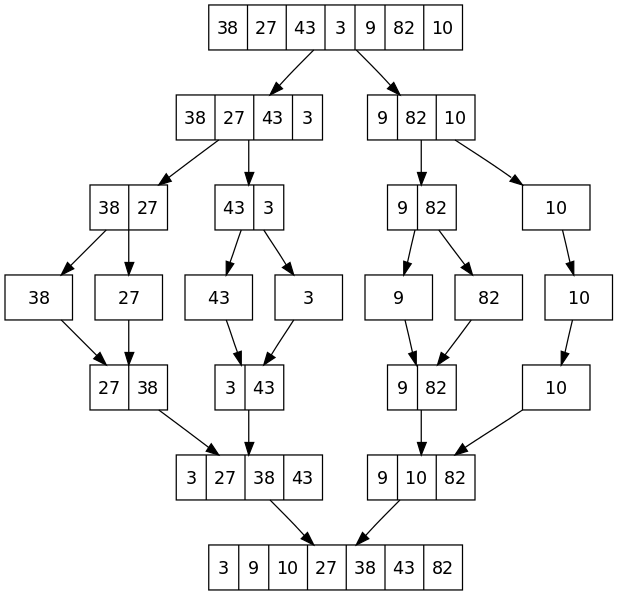

leetcode
microsoft
algorithm
STL
tutorial
148. Sort List
- 2018-06-08
- Lawrence Lin
Problem description:
Sort a linked list in O(n log n) time using constant space complexity.1
2
3
4Example 1:
Input: 4->2->1->3
Output: 1->2->3->4
1 | Example 2: |
Solution:
The description is asking for algorithm that runs within O(nlogn). Therefore, only quicksort, merge sort, heap sort can meet the requirement.
- First of all, we cut the list into half, the code is widely use, make sure to memorize it.
- Then we keep cut it into half, until there’s only one node left.
- Start merging the list and sort it.

1 | /** |
time complexity: O(nlogn)
space complexity: O(logn), it’s the tree’s depth
reference:
https://goo.gl/uJF4wn